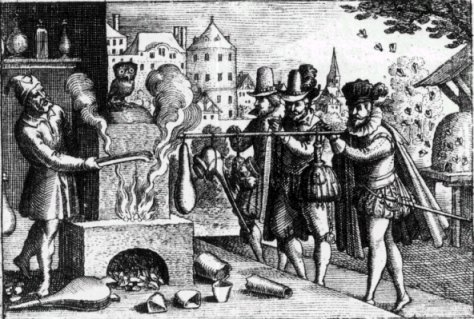
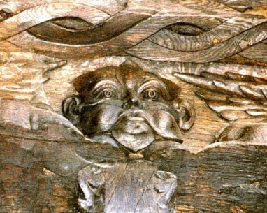
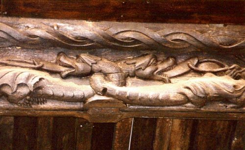
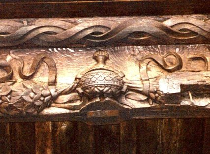
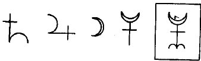
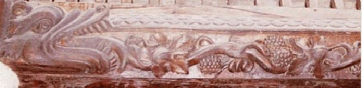
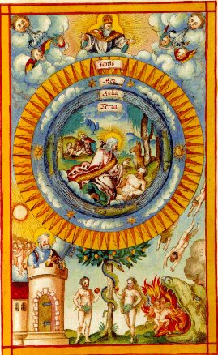

Emblema XXVIII.
revu le 10 mai 2002Notes liminaires : cet emblème est illustré de plusieurs photos d'alain Mauranne où une galerie boisée montre de riches détails qui ne peuvent laisser indifférent l'Amoureux de Science au fait des arcanes de l'Art sacré. Il s'agit des figures II, III, IV et V. Mais l'album est plus important. On peut encore en voir un extrait dans l'emblème XXX, figure IV. Il s'agit d'une galerie de bois sculpté, dite du Saint-Esprit, qui appartient à l'ancien Hospice du Saint-Esprit, à Besançon. Son riche décor, encore influencé par le Moyen Âge, appartient cependant sans conteste à la Renaissance (angelots, guirlandes, vases, ligures allégoriques et mythologiques) et permet de dater cette œuvre du XVIe siècle. Voyez ici cette galerie.
Rex balneatur in Laconico sedens, Atrâque bile liberatur à Pharut.
(Le roi se baigne, assis dans le bain laconien ; il est délivré de sa bile par Pharut.1)
Le Roi Duenech2 (qui du lion vert porte les armes)
Sévère dans ses mœurs était gonflé de bile.
Il mande alors vers lui Pharut, grand médecin
Qui lui promet la guérison et d’une source
Prescrit l’onde aérienne ; on voit alors le roi
Se laver longuement sous la voûte de verre
Et la rosée emporte enfin toute sa bile3.
Il y a dans l’homme trois cuissons : la première dans le ventricule, la seconde dans le foie et la troisième dans les veines. Il est, de même, un nombre égal d’évacuations générales des excréments qui correspondent aux cuissons et chassent chaque jour leurs superfluités. La première se fait par l’intestin et se rapporte à la première cuisson, la seconde s’effectue par l’urine, et la troisième par l’expiration du corps entier ou transpiration. Ces deux dernières correspondent respectivement à la deuxième et à la troisième cuissons. Dans la première de celles-ci s’élabore le chyle, dans la seconde, le chyme et dans la troisième une rosée ou substance rorale qui apparaît dans chacune des parties du corps. Les premières de ces excrétions, nommées fèces, sont épaisses, bilieuses, grasses. Elles sont expulsées par le derrière, à travers l’intestin, et, lorsqu’elle ne circulent pas, on les chasse soit avec douceur, soit avec une force moyenne, soit encore avec violence, à l’aide de purgatifs ou de laxatifs. Les excréments de la seconde catégorie sont liquides et de consistance plus subtile ; ils sont bilieux et salés. Ils sortent des veines par les reins et la vessie comme par des aqueducs. La substance de ces organes révèle l’urine. Les superfluités de la dernière classe sont encore beaucoup plus subtiles et, pour cette raison, sortent la plupart du temps d’elles-mêmes, par expiration, de pores extrêmement ténues ou sont véhiculées avec les humeurs liquides, comme la sueur. Elles sont stimulées au moyen de sudorifiques de même que les précédentes le sont par les diurétiques. Les Grecs et les Romains de l’antiquité se préoccupèrent beaucoup de l’évacuation de cette troisième sorte d’humeurs. C’est pourquoi ils eurent recours à tant d’espèces de jeux et d’exercices, comme la friction matinale de tous les membres, les onctions d’huile, la lutte, l’art du pugilat, les concours de course, les jeux de balle à la paume, au filet et de grand jeu, les lotions et les bains quotidiens dans les rivières ou les établissements de bains artificiels. Pour faciliter ceux-ci, on avait construit à Rome des édifices si magnifiques qu’il est davantage en notre pouvoir de les admirer que de les imiter. Les thermes de Dioclétien dont il subsiste encore des restes importants et qui sont, si je ne me trompe, consacrés aux archanges, peuvent attester la grandeur, la magnificence et la splendeur de ces ouvrages.
La métallurgie comporte des espèces de cuisson à peu près identiques à celles que nous venons de citer. La première s’effectue, selon son mode, au cours de la grande Année, c’est-à-dire au cours de la révolution de la sphère supérieure, la seconde au cours de la révolution de la sphère inférieure et la troisième dans la révolution de la sphère moyenne. Les philosophes trouvent également des moyens variés pour parvenir, grâce au concours de l’art, à chasser commodément le poids mort que constituent les superfluités de ces excréments. Tels sont les ablutions, les purges, les bains ordinaires et les bains laconiens par lesquels ils pratiquent dans l’œuvre philosophique ce que les médecins opèrent dans le corps humain. C’est pourquoi Duenech est introduit par Pharut dans le bain laconien pour qu’il y transpire et se débarrasse par les pores des fèces de la troisième cuisson. La disposition de ce roi est mélancolique et atrabilaire et, pour cette raison, sa valeur et son autorité sont en moindre estime que celles des autres princes : on lui impute en effet le caractère morose de Saturne et la colère ou la fureur de Mars. Il voulut donc ou mourir ou être guéri si cela était possible. On trouva un médecin qui accepta cette province qu’on lui attribuait et fut amené grâce à des prières et des présents. Et cette allégorie est très fréquente dans les écrits des philosophes, comme par exemple chez Bernard et Alain, dans le petit traité de Duenech et dans une foule d’autres. C’est pourquoi nous n’ajouterons pas les autres circonstances que l’on peut trouver chez eux. Il suffit d’avoir observé ici quelle est la cuisson dont on chasse l’excrément par ce bain. Là se trouve en effet le pivot de toute l’affaire4. Dans les thermes ou bains chauds, la chaleur enfermée dans le corps est rappelée à la surface de la peau en même temps que le sang, et il en résulte une couleur agréable du visage et de tout le corps. Lorsqu’elle sera présente, elle fournira le signe que la noirceur mélancolique qui affecte la peau peut être évacuée progressivement, que toutes les humeurs peuvent être rectifiées, afin qu’un sang rosé et excellent soit produit ensuite. Il est nécessaire que l’équilibre entier de ce corps soit corrigé, résultat que l’on demande au bon sang ; le corps est froid et sec tandis que le sang est, au contraire, chaud et humide. Il appartient au médecin de savoir et de dire à l’avance, par son pronostic, si cela peut se faire.
Il s’est trouvé des chercheurs qui ont tenu Cerdon5 pour un grand prince ou pour un fils de roi, mais ils ont décelé en fin de compte, à des signes certains, quelles étaient son origine et son éducation. L’artiste doit veiller à éviter une telle erreur et à choisir avant toutes choses le véritable enfant royal, bien qu’il ne resplendisse pas d’ornements d’or et qu’il ait un vêtement méprisé et vil, un teint livide et mélancolique ; il ne faut pas pour ces raisons le rejeter ou prendre un autre à sa place. Car s’il est parfaitement lavé, sa nature excellente et royale apparaîtra bientôt comme on le vit chez Cyrus, Paris, Romulus, qui furent élevés chez des paysans. Il faut prendre soin que le bain soit laconien6, c’est-à-dire vaporeux et sudorifique, que l’eau ne durcisse pas les chairs tendres et n’obstrue pas les pores, ce qui apporterait plus de dommage que de profit et empêcherait l’effet attendu de se produire. Que nul ne s’inquiète des vêtements royaux que le sujet doit revêtir après le bain. Comme autrefois la fille d’Alcinoüs présenta des vêtements à Ulysse7 naufragé et nu, il y aura quelqu’un pour lui en envoyer de très précieux, afin qu’on puisse, comme il le mérite, reconnaître en lui le fils du Soleil.
Notes1. Voyez d'abord que l'image montre un Roi enfermé dans ce qui semble être un four à réverbère dans lequel est une lampe à huile. Cet instrument est une indication sur le feu de lampe [1, 2, 3, 4, 5, 6, 7, 8, 9, 10, 11, 12,]. Voici ce que nous en dit Pernerty :

FIGURE I
(frontispice de l'Examen Fucorum , Michel Maier, 1617 : le feu de réverbère)[cette gravure donne à voir plusieurs symboles dont l'un au moins est rare : la chouette. Observez aussi la ruche, abordée dans l'emblème XLII]
FEU DE LAMPE. Eau ou mercure des Philosophes, et non le feu d’une lampe ordinaire, comme quelques-uns l’ont conclu des paroles d’Artéphius, lorsqu’il dit : Nous avons proprement trois feux, sans lesquels l’Art ne peut être parfait. Le premier est le Feu de Lampe, qui est un feu continuel, humide, vaporeux, aérien, et il y a de l’artifice à le trouver. Il s’explique peu après en ces termes : le second est le feu de cendres... ou, pour mieux dire, ce feu est cette chaleur fort douce, qui vient de la vapeur tempérée de la lampe. Philalethe le dit encore plus clairement dans son traité qui a pour titre : Manuductio ad rubinum cœlestem. Notre eau, dit-il, n’est pas le mercure vulgaire, c’est une eau vive, claire, brillante, blanche comme la neige, chaude, humide, aérienne, vaporeuse et digérante. C’est cette chaleur de la lampe qui étant administrée avec douceur, et étant tempérée, entourera la matière et la cuira, jusqu’à ce que, par la calcination, elle produise le feu de cendres. C’est dans ces feux que la vase est scellé hermétiquement. Cette eau est notre vase, et dans elle se trouve notre fourneau secret, la chaleur duquel doit être modérée et administrée en proportion géométrique pour que l’œuvre réussisse.Nous sommes tout à fait d'accord avec l'opinion de Pernety et c'est bien par la cabale hermétique qu'il faut comprendre cette lampe à huile suspendue au sommet du four. Artéphius a fort bien décrit ce feu [continuel, permanent, fait de vapeurs et d'AIR] ; il a noté qu'il y avait de « l'artifice » à le trouver [c'est-à-dire de la ruse, épithète de Mercure. C'est par ruse que Mercure triomphe de Résus]. Quant au feu de cendres, c'est le feu des chaux métalliques sublimées dans le Mercure, à différencier donc, du feu de cendres vulgaire et à distinguer aussi du feu de cendres philosophique par lequel des Adeptes ont dénommé aussi le feu secret [puisque préparé à partir de l'alkali fixe, donc des cendres des végétaux terrestres ou marins].
Ce thème de la transpiration, qui rejoint le traitement de l'hydropisie, abordé dans un autre chapitre, est traité par d'autres Adeptes, comme Lambsprink [De Lapide Philosophorum]. Il semble que l'on doive faire une différence entre traiter cette humeur hydropique et laver le roi. Le Bain des Astres est une constante dans la littérature alchimique et fait référence à la cuisson des chaux métalliques - que les Artistes appellent encore les natures métalliques - dans le bain mercuriel, c'est-à-dire dans le fondant alcalin, à base de potasse ou à base de phosphates. Mais, ici, il semble qu'il faille préparer une véritable purgation en lavant le roi de sa « bile ». A quelle substance Maier fait-il allusion ? Nous trouverons peut-être la réponse dans ce chapitre. Celui-ci, d'ailleurs, se révèle un rien aride et la première partie est un tissu de banalités médicales dont Molière se moquait justement. Il ne faut pas oublier, en effet, que Michel Maier était le médecin attitré de Rodolphe II.
2. Voici encore un autre fantôme de l'alchimie. Ce Duenech a été cité par de nombreux alchimistes. En voici la liste : Artéphius, le pseudo Flamel, Michel Maier, Jacques Le Tesson, Ripley, Fulcanelli, E. Canseliet et la liste n'est point close. Il faut encore citer le Rosaire des Philosophes. Voyons ces auteurs successivement ; on notera d'abord que dans un célèbre manuscrit du XVe siècle, le Donum Dei, attribué à un franciscain alchimiste, on trouve ces tableaux de l'art dont nous extrayons ce qui suit :"- En premier lieu se trouve en notre lion vers la vraie matière, et de quelle couleur elle est, et s'appelle adro ou azeth ou duenech [...] »
J'ai déjà donné un commentaire de duenech que l'on trouve dans le Livre Secret attribué à Artephius ; on voit qu'ici azeth est associé à ce mot qui masque des substances intervenant dans la confection du feu secret. ADRO est mis pour ADROP et AZETH se rapproche évidemment de AZOTH qui sert de titre à l'un des classiques de l'alchimie [qu'on croit rédigé par le pseudo Basile Valentin, mais qui, à en croire Fulcanelli, serait l'oeuvre de Senior Zadith]. On trouve dans un article publié par M. Berthelot [Journal des Savants, juin 1891] une intéressante étude sur les traditions techniques de la chimie antique chez les alchimistes latins et du Moyen Âge. Berthelot y évoque notamment le Livre des Prêtres [D'après la science des anciens philosophes, les diverses couleurs et leurs minéraux ont deux origines principales, etc.], cité par l'Artis auriferae, etc. (Bâle, 1572). Le Livre des pierres, qui faisait partie des quatre livres attribués à Démocrite se rattache à la même tradition. Laissons parler Berthelot :
Le traité latin mélange aussi la tradition antique et la tradition arabe : il annonce qu'il parlera d'abord des métaux : or, argent, cuivre, plomb, étain, puis de l'orpiment, de l'azur, du mercure, du soufre, du nitre, du sel ammoniac (appelé aussi dans un autre endroit aquila, nom qui était synonyme de matière sublimée en général - cf. section humide radical métallique pour tout ce qui a trait à l'aigle et au Nil -) (almiçadir), des pierres telles que l'aimant, l'hématite, le corail, le cristal, etc.; enfin il annonce la préparation de matières colorantes, telles que le vermillon, le cuivre brûlé, désigné sous le nom grec altéré de calco cecamenon (calkoV kekaumenoV, aes astum], désignation technique que nous rencontrons déjà dans les Compositiones, dans la Mappae clavicula, et qui se lit en maints endroits des mss. 6514 et 7156, ainsi que dans certains traités de peinture du Moyen Âge. Il figure notamment au fol. 48 du ms. 6514, dans un petit lexique rempli de mots arabes, à côté de l'atincar ou borax (le mot borax avait alors un sens générique ; ce n'est que depuis un siècle ou deux qu'il a été spécialisé et limité à la substance que nous désignons aujourd'hui sous ce nom), sel destiné aux soudures, de l'alkitran, résine fossile ou bitume, du duenez ou vitriol [...]Il est assez remarquable de voir figurer le mot « duenez » qui évoque, à n'en point douter notre duenech, et ce dans un contexte tout à fait pertinent [il se trouve qu'il est associé aux fondants et aux sels destinés à la soudure ; par parenthèse, on n'y voint point figurer le mot chrysocolle, qui pour Gaffiot et Bailly désigne cependant du borax...Mais il paraît qu'il s'agit d'un sulfate de cuivre]. Duenech est ainsi évoqué par Flamel dans ses Figures Hiéroglyphiques :« Les Envieux ont appellé encore ce monstre, en cette opération, Numus, Ethelia, Arena, Boritis, Corsuste, Cambar, Albar aeris, Duenech, Randeric, Kukul, Thabitris, Ebisemeth, Ixir, etc. Ce qu'ils ont commandé de blanchir. » [cité par Pernety, in Fables]

FIGURE II
(ancien hospice du Saint-Esprit, galerie boisée - Besançon : le bon roi Duenech. Cliché Alain Mauranne)Nous avons souligné les synonymes fréquemment rencontrés dans d'autres textes. Pernety parle ici du Sphinx, fils d'Echidna et de Typhon. L'une de nos hypothèses est que Duenech serait un anagramme pour Ech(i)dne, monstre engendrée par Gaïa et Pontos : femme et serpent à la fois, le monstre Echidna passe pour avoir donné le jour à des créatures fabuleuses parmi lesquelles on peut citer Chimère, les Dragons de Colchide et du jardin des Hespérides, le lion de Némée. Rappelons que nous avons rencontré le Lion de Némée d'abord dans la section Fontenay, puis dans l'Atalanta, XXV, où nous avons examiné une cheminée hermétique sise à Avignon dont nous devons l'invention à M. Alain Mauranne et de belles photographies à M. Philippe Litzler. On trouve dans l'Oeuvre du Lion Verd de Jacques Tesson un passage notable sur Duenech :
[...] DEUXIÈME DIALOGUE SUR LA CONDUITE DES PHILOSOPHES OU LEUR GRANDE THÉRIAQUEQue nous apprend ce texte ? On serait tenté de dire : une absurdité. En effet, les Adeptes s'accordent, en grande majorité, à voir dans le principe mâle, le Soufre rouge ou Âme, c'est-à-dire le principe de teinture. Et dans le principe femelle, opposite au principe mâle, la substance qui reçoit tout naturellement la teinture à l'instar d'un ferment. Cette réception de la teinture est, du reste, la seule Projection qu'il soit possible de définir d'après des principes rationnels. Tout autre type de projection renvoie soit à des synthèses mentales [cf. Chevreul et surtout Jung], soit à des élucubrations théosophiques. Nous avons vu qu'il restait le cas, particulier, de la correspondance Lapis-Christus et que, précisément, c'était là où s'étaient exprimés les alchimistes médiévaux qui tous, à peu près, étaient des moines érudits ; ils travaillaient dans des abbayes et ont produit la majorité des textes apocryphes qui nous ont été légués, par la suite, dans d'amples compilations. Mais, revenons aux colombes de Diane. Car c'est d'elles qu'il s'agit, nommées successivement par E. Canseliet comme des cinabres ou comme des oxydes, la dernière formulation étant l'une des plus charitables que nous ait laissée le disciple de Fulcanelli. Donc, disions-nous, si le Soufre rouge correspond à peu près à ce qu'en écrit Le Tesson, en revanche, nous ne retrouvons nullement notre Soufre blanc, dans ce qu'en dit l'auteur du Lion Verd. Cela provient de la confusion, malheureuse et entretenue, entre le premier Mercure et le Mercure des Philosophes. On n'a pas dit, en effet, que là où les mythographes avaient trouvé trois Mercure, les cabalistes hermétiques, de leur côté, en avaient exploité trois, eux aussi. Le Mercure des philosophes, rappelons-le une énième fois, est donc le Soufre blanc, c'est-à-dire la Lune dans l'un de ses quartiers, comme Altus l'a bien vu en son Mutus Liber. Ce 1er Mercure ne doit point être confondu avec le Mercure commun, 1er état du Mercure philosophique avant que les Soufres n'y soient infusés [on en discute dans Fontenay]. Et enfin, le 3ème Mercure, philosophique, ou animé, qui résulte de la mixion du Mercure commun et du Rebis, androgyne où l'on devine les deux Soufres. Et dans son texte, Le Tesson confond [par ignorance ou par envie ?] le Soufre blanc et le Duenech d'Artephius. Quoi qu'il en soit, ce qu'il dit du chien méridional reste intéressant : on y reconnaîtra notre chienne d'Arménie [Soufre blanc], alors que le Roi est nommé [mais Le Tesson ne le dit pas, alors qu'il l'a dit pour Beja, ce qui semblerait montrer qu'il a été réellement envieux] le chien du Corascène. Peut-on, alors, en inférer qu'il y a un rapport entre le Corascène et le nom grec du corbeau, Korax ? Peut-être : n'oublions pas que le premier stade de la Grande Coction [3ème oeuvre] est marqué par l'apparition de la couleur noire, c'est-à-dire par la dissolution. Mais, a-t-on pris garde que dans cette dissolution, seul le Soufre rouge disparaît totalement [par cabale] alors que le Sel incombustible [salamandre] restait pour ainsi dire, intact ? Et que ce Sel, le troisième principe inventé soi-disant Paracelse, existait déjà sous le nom d'Arsenic, du temps de Geber, puis plus tard, sous Sethon et surtout Fulcanelli, réinventé en Soufre blanc...Dès lors, il n'est pas inimaginable, ni illogique [vu selon l'optique de la cabale, bien sûr] d'envisager un rapport qui ne soit pas de pure forme entre le noir corbeau et le Soufre rouge. Dès lors encore, il devient possible de trouver un sens aux dénominations improbables de Jacques Le Tesson. Mais, si Duenech doit être placé d'un côté, ce sera celui du Soufre rouge, et non pas du Soufre blanc. Enfin, le rapport entre duenech et le Roi doit être cherché entre le Mercure et l'action de dissolution qu'il exerce sur le Soufre rouge. Quant à Pernety, voici ce qu'il dit du Duenech :
Demande. — Qu'est cela que les Philosophes ont tant diligemment cherché et trouvé, tant obscurément traité en la composition d'un corps métallique inconnu ?Réponse. — C'est une substance hermaphrodite qui a vertu de guérir du corps toutes infirmités, tant chaudes que froides, et de ressusciter tous métaux morts par les accidents qui sont survenus à Nature, au temps de leur décoction.
D. — Que fut cette substance et d'où tire-t-on telle vertu ?
R. — De deux espèces contraires, toutefois toutes deux d'une nature et vertu.
D. — Quelles sont les qualités de chacune en son particulier et en ses complexions ?
R. — L'un est chaud et sec, et celui-là est le masculin, l'autre est froid et humide, qui est le féminin. L'un est dur, l'autre est mol, l'un est fixe, l'autre volatil. L'un est citrin l'autre est blanc. L'un est de nature de sol, l'autre de lune. L'un est feu l'autre est eau, l'un est esprit fœtent, l'autre est esprit cru. Et faut savoir qu'il n'y a que ces deux matières tant seulement auxquelles matières les Philosophes ont baillé noms infinis et étranges savoir au masculin Roi, vieillard, feu, terre, soleil, esprit fœtent, agent, forme, sperme masculin, gomme rouge, Gabertin frère de Beja, soufre et plusieurs autres noms. Et la femme est appelée Reine, femme blanche, Rosée, esprit fugitif, neige, colombe, sel fleury, eau vive, fleur de pêcher Beja, Dragon, lion, chien méridional, vierge épouse, eau sèche, vinaigre, eau de vie, Duenech, Azoth, fumée, vitriol, mercure, laict, sueur, mère, vapeur, humidité visqueuse, le crachat de la lune, air, eau inconnue et plusieurs autres.
Duenech. Nom que quelques Chymistes Hermétiques ont donné à leur matière au noir, qu’ils appellent encore le Laiton qu’il faut blanchir. On le nomme aussi Duenech vert ou Antimoine. [Dictionnaire]Là encore, on retrouve l'idée d'une liaison entre le Mercure et l'amalgame ou Rebis, formé des deux Soufres, sublimés dans le dissolvant secret et qu'il faut, des ténèbres, porter à la lumière, objet de la réincrudation. Notez qu'il s'agit d'un thème abordé dans un petit traité qui est de joyaux de l'art, la Lumière sortant par soy-même des Ténèbres, texte apocryphe. Notez encore que l'allégorie de la comète dans un texte de Monte Snyders [la Métamorphose des planètes] rejoint tout à fait ce thème de la résurgence. Michel Maier, dans son Atalanta fugiens aborde le thème du Roi Duenech à deux reprises, au chapitre III - note 7 - et au chapitre XVII - note 17 - par le biais du mot Cambar qui est équivalent. On trouve, dans le Theatrum Chemicum [t. III, 756-757, Ursel, 1602], une allégorie qui reprend en substance ce que nous conte Maier [il s'agit d'un texte anglais, disponible à l'adresse http://www.levity.com/alchemy/duenech.html :
FIGURE III
(ancien hospice du Saint-Esprit, galerie boisée - Besançon : le double Mercure. Cliché Alain Mauranne)Duenech AllegoryNous parlions plus haut du Rosaire. On y trouve cet extrait où trois réitérations d'un même procédé se devinent :
There was an old duke, called Duenech. He saw himself despised in the meeting of monarchs, on account of his deep melancholya. After a deliberation with friends how this melancholy could be suppressed and how the blood with the other excellent temperaments could get the upper handb, he sent for the physician Pharut and offered him a high reward, if he, Pharut, the prince of physicians, could cure him. Thereupon Pharut said that it would be a protracted and difficult cure which only he could bring about and he promised to cure Duenech.
They fixed a time to begin, namely when Saturn was in opposition with the Sunc. Thereupon Pharut ordered everybody to leave the duke’s house, with the exception of a little fool in gay-coloured garmentsd, who was allowed to stay to entertain the duke.After Pharut put Duenech in a bed with white sheets and covered him well, so that he might not be killed by the smoke of the nearest furnacee. Then he gave him clear water, in consequence of which Duenech began to sweat so strongly that the white sheets were completely stainedf. The black bile had been dissolved in the whole of Duenech’s body. Thereupon Pharut prepared another bed for him, the bolster of which was filled with the feathers of a young, black eagle, and the pillow with swans’ feathers; on the bed a black sheet and a white cover were laidg. Duenech was put in this bed and all air holes were entirely closed so that neither sweat nor vapour might escape. This bed was heated and Pharut rubbed Duenech’s body and feet with evil-smelling oil until the black bile had spread to the top of his headh. From the change of colour it was clear that Duenech became unconscious several timesi. Pharut opened Duenech’s mouth and rejoiced when he saw that Duenech’s palate was white. At last he laid the exhausted monarch into a third bed and revived him there with water and oil, mixed with sulphurj.
When Duenech looked at himself, he saw that he was freed from melancholy and had new, healthy blood, and that he surpassed all his fellow-soldiers in powerk.
Notes sur ce texte :
a. comment le délivrer de sa noirceur, c'est-à-dire de ses haillons sordides.
b. discussion sur le moyen de savoir comment obtenir un Soufre rouge dépuré.
c. le médecin, Pharut, avertit le Roi Duenech de la longueur et de la difficulté de la cure. Le traitement ne peut être entrepris que lorsque Saturne est en opposition avec le Soleil, c'est-à-dire qu'il faut opérer la dissolution du Soufre dans le Mercure.
d. le fou est l'épithète usuel pour le Mercure. Selon toute apparence, il s'agit d'une allégorie sur la couleur des différents « Soufres rouges », c'est-à-dire sur le principe de teinture.
e. Le corps du Roi doit être environné d'une maison de verre afin d'éviter son évaporation, du fait de la chaleur du four à réverbère. Allégorie déjà vue dans Atalanta, IX.
f. Une seule opération est compatible avec ce lavage du roi : la dépuration d'une matière. Trois produits sont susceptibles d'une telle opération, compte tenu de nos hypothèses : la potasse, le salpêtre et enfin, le verre. Voyez au sujet du fiel de verre l'Art de la Verrerie, de Loysel et l'Atalanta, XX.
g. dans un premier temps, l'opération semble consister en un véritable « désuintage ». Dans un second temps, l'Artiste prépare un autre bain pour son Roi. L'agencement de ce bain est expliqué par la cabale : des plumes d'un aigle noir pour le matelas, des plumes d'un cygne pour l'oreiller, et sur le lit même un drap noir et une couverture blanche. Il faut comprendre ici qu'il ne s'agit pas, en fait, de bains différents, mais d'une réitération de la même opération.
h. Ce passage est très difficile à décrypter. Il apparaît probable qu'une sublimation est décrite, puisque cette huile malodorante [est-ce de l'eau de soufre, mêlée d'une chaux métallique ?] va faire en sorte que la tête [la surface du composé, c'est-à-dire le Caput] seule sera noire.
i. renvoie à plusieurs dissolutions totales au cours desquelles les substances disparaissent dans le Mercure.
j. troisième réitération de la même opération. Il est clair que les mots de soufre, d'eau et d'huile ne désignent pas les produits vulgaires.
k. on aboutit à un produit dépuré. Est-ce un amalgame ou une substance chimique isolée ? On serait tenté d'opter pour la première hypothèse, car les alchimistes parlent tous de leur laiton qu'il faut blanchir. Il faut donc comprendre que ce Roi Duenech symbolise un Mixte philosophique.« Tout d'abord on a la vraie matière dans le lion vert, de la couleur qui est la sienne. Et on l'appelle Adrop, Azoth ou Duenech vert [cf. Emblème II]. Au deuxième degré on a la même chose, et au troisième les corps se dissolvent dans l'argent-vif des philosophes, c'est-à-dire dans l'eau de notre Mercure, et il se fait un corps nouveau. » [Rosaire des Philosophes]
(ancien hospice du Saint-Esprit, galerie boisée - Besançon : le vase de nature. Cliché Alain Mauranne) 
FIGURE IVNous avons eu l'occasion d'approfondir ce point de science dans le commentaire des emblèmes de la Philosophia Reformata de Mylius. Mylius a, en effet, reproduit des planches, en les modifiant au fond assez peu, du Rosaire [celui qui n'est pas d'Arnaud de Villeneuve]. Il semble que la clef du Duenech soit à trouver dans les trois phases de la conjonction du roi et de la reine. Et nulle part ailleurs que dans le Rosaire, on ne trouve mieux décrites, par l'image, ces trois phases. Dans la première phase, on aperçoit une colombe surmontée d'une étoile. Les époux royaux échangent des tiges florales où l'on semble deviner des lys et qui s'entrecroisent. Ils ne sont pas dévêtus et ont leurs couronnes. Dans la seconde phase de la conjonction,les époux sont dévêtus et les fleurs de lys se sont augmentées de phylactères [voyez l'Atalanta, XXVI sur le sens hermétique du phylactère]. Ces banderolles, au vrai, se rapportent à Artémis, c'est-à-dire à Diane aux cornes lunaires, dont voici l'hiéroglyphe véritable :

(tiré de la Monade Hiéroglyphique, John Dee)Les phylactères ont ici le sens de moyen de liaison entre les deux extrémités du vaisseau de nature [le Roi et la Reine]. Mais il importe de souligner que la figure ci-dessus présente les hiéroglyphes de la série mercurielle, et non point ceux de la série soufrée. Or, et nous venons de le faire voir par l'ambiguité des textes de certains alchimistes, rien ne semble plus flou que tout ce qui a trait à la conjonction des natures métalliques, ou à la nature exacte du Roi Duenech. Certains font de ce Roi le principe même du Mercure tandis que d'autres le tiennent pour Beja, la soeur de Gabertin...Dans ses Fables Egyptiennes et Grecques, Pernety a sur Duenech le même raisonnement que nous et s'en tient à la diversité des noms proposés pour le Rebis :
Notre matière dans cet état est le Serpent Python, qui ayant pris son être de la corruption du limon de la terre, doit être mis à mort, & vaincu par les flèches du Dieu Apollon, par le blond Soleil ; c’est-à-dire, par notre feu, égal à celui du Soleil. Celui qui lave ou plutôt ces lavements qu’il faut continuer avec l’autre moitié, ce sont les dents de ce serpent que le Sage opérateur, le prudent Cadmus, sèmera dans la même terre, d’où naîtront des soldats, qui se détruiront eux-mêmes, se laissant résoudre en la même nature de terre...... Les Philosophes envieux ont appelé cette confection, Rebis, & encore Numus, Ethelia, Arene, Boritis, Corsusle [sic, Corsuste], Cambar, Albar aeres, Duenech, Bauderie, Kukul, Thaburis, Ebisemeth, Ixir, &c. c’est ce qu’ils ont commandé de blanchir. » J’ai parlé assez au long de cette noirceur dans l’article des principes opératifs : le Lecteur pourra y avoir recours. [Pernety]C'est lors de la troisième phase de la conjonction, que les époux [qui ont toujours leur couronne, alors qu'elle aurait dû leur être enlevée] sont réunis dans le Bain des Astres. Et c'est là, sans doute, que se forme l'embryon hermétique ou Rebis. Quelle est l'opération mystérieuse qui s'accomplit dans cette allégorie, quelles sont les matières porpyrisées qu'il faut placer dans le creuset, quelle est le corps réincrudé qui résultera de l'action du dissolvant ? Répondre à ces questions, c'est parcourir toute l'alchimie et résumer 2000 ans de Philosophie hermétique. Toutefois, nous pensons pouvoir trouver des termes de comparaison avec le travail qui s'effectue dans les hauts-fourneaux, c'est-à-dire relevant du domaine de la sidérurgie. Il semble, en effet, que les industriels aient réalisé en grand ce que les alchimistes ont réalisé dans leur petit monde, bien que les voies divergent assez rapidement. Mais, en somme, les processus chimiques doivent être, au départ du feu, semblables, si ce n'est l'échelle.
3. En effet, le processus décrit dans cette épigramme repose avant tout sur une dépuration. Nous savons que les matières utilisées par l'Artiste [Hercule, Cadmus] sont fragiles et que leur perte résulte avant tout du risque de volatilisation ou de combustion précoce. Il y a trois moyens d'agir dans la prévention de ces fléaux : introduire un lien dans la matière fondue ; agir sur la prescription du calorique ; agir sur l'atmosphère environnante, c'est-à-dire sur le flux des vents [Zéphyr, Calais, Zéthès, Notus, Euros, etc.]. Pour s'opposer à la perte des natures métalliques, dans le traitement initial des natures métalliques, et plus spécifiquement du principe de teinture, il faut faire convenablement fondre les matières étrangères, ordinairement plus légères que les soufres, et les enlever ensuite par une sorte de décantation. Ces matières étrangères sont ordinairement des terres [la chaux, la magnésie, l'alumine (argile), la silice, l'oxyde de manganèse et le soufre vulgaire, appelé aussi soufre puant]. Or, notre colcothar, qui existe constamment dans la minière qu'on exploite, augmente la fusibilité de ces matières ; et si l'on ne possédait pas le moyen de faire fondre ces matières facilement, on perdrait une quantité considérable de Soufre rouge qui serait entraîné par toutes les matières dont la fusion est facilitée, précisément, par le Soufre rouge. C'est pourquoi Philalèthe prescrit l'utilisation des colombes de Diane pour diminuer l'acrimonie du Mercure, colombes que reprend Fulcanelli :«...et ces Colombes de Diane, autre énigme désespérante, sous laquelle la spiritualisation et la sublimation du mercure philosophal sont cachées. » [Myst. Cath., p. 136]

FIGURE V
(ancien hospice du Saint-Esprit, galerie boisée - Besançon : le haut-fourneau des alchimistes. Cliché Alain Mauranne)Or, le meilleur moyen de s'opposer à ce départ prématuré consiste à ajouter au charbon un fondant. Ce fondant est de la chaux (castine), si la minière est trop argileuse, et de l'argile (erbue), si la minière est trop calcaire. Lorsque la minière du Soufre a été suffisamment chauffée avec le charbon mêlé au fondant qu'on y a ajouté, on pratique, à la partie inférieure et la plus déclive du fourneau, une ouverture [percée] par laquelle le métal s'écoule pour venir se figer dans un sillon sablonneux. Cette masse métallique ainsi refroidie porte le nom de fonte [remarquez le haut-fourneau de la figure V, où l'on voit le gueulard à gauche, et la fonte à droite, répandue en de larges grappes] . On appelle laitier la masse vitreuse qui recouvre la fonte liquide et qui contient le fondant, les matières étrangères du minerai et une certaine quantité de notre colcothar et aussi de savon du verrier. Du reste, la composition du laitier varie beaucoup, suivant les espèces de minières et les procédés d'extraction qu'on emploie. Contrairement aux opérations métallurgiques classiques, dans les manipulations alchimiques, plus le laitier est riche en oxyde de fer, plus le procédé d'opération est bon. On a trouvé à ces laitiers un emploi : par leur composition, ils se rapprochent beaucoup du verre, et surtout de celui qu'on emploie à la fabrication des bouteilles ; aussi a-t-on cherché à les utiliser en y ajoutant les éléments qui s'y trouvent en quantité insuffisante, essentiellement la silice. Mais, outre les laitiers, on trouve des produits accidentels qui ont mené d'ailleurs, à la réalisation des premières synthèses minérales [voyez Mercure]. Certes, les produits que nous rangeons sous ce titre, n'ont aucune importance au point de vue du profit qu'on en peut tirer, mais ils sont nombreux et peuvent servir à jeter une certaine lumière sur les phénomènes qui se produisent dans le travail du haut-fourneau.
On trouve particulièrement ces diverses matières dans les loups qui restent
au fond des creusets après une mise hors. Le métal de ces masses s'étant
refroidi avec une extrême lenteur présente fréquemment des particularités
remarquables ; il est généralement peu carburé et ressemble au fer malléable, dans sa cassure on remarque de grandes lamelles. Ailleurs, et surtout dans les fourneaux ou une fonte très carburée est restée longtemps en contact avec les parois de l'ouvrage et s'est refroidie lentement, on rencontre des parties dont l'aspect rappelle la fonte spéculaire, mais dont les facettes sont couvertes de graphite ;
on peut aussi y découvrir des concrétions cristallisées et de la silice cristallisée en fines aiguilles. Tout cela évoque un travail minéral, abouti par hasard, pâle reflet des réalisations de la Nature [voir Mercure de nature].
Au total, le mot Duenech, parmi d'autres, doit faire évoquer une opération de dépuration qui porte sur un sel soluble, parmi lesquels le verre. Quant à la rosée qui emporte la bile, revoyez ce que nous avons appris sur le fiel de verre, dans l'Art de la Verrerie de Loysel.
4. Tout, effectivement, semble évoquer une opération où une souillure, une « sanie » vient à la surface d'un composé. Et que cette sanie représente la part essentielle d'une matière fondamentale pour l'oeuvre [voyez Loysel et Principes].
5. Il s'agit d'une référence aux conséquences funestes d'interprétations délirantes d'un poème apocalyptique, intitulé l'Ascension d'Isaie. Ce poème apocalyptique décrit le martyre du grand prophète hébreu et sa montée aux dieux, où il retrouve d'autres prophètes auprès du Très-Haut, lequel prescrit à son fils de descendre à travers les sept deux jusqu'aux enfers. Arrivé sur Terre, le fils du Très-Haut prend la forme d'un homme, naissant miraculeusement du sein d'une vierge, dont la grossesse ne dure que deux mois...Il vit caché en Galilée pendant son enfance, puis accomplit, devenu adulte, des prodiges au cours de sa vie publique. Alors, le Prince de ce monde, qui n'est autre que Jéhovah, ameute contre lui les enfants d'Israël, qui le font mettre à mort et suspendre au bois sans savoir qui II est [mise au creuset de la matière première, voir parallèle Lapis-Christus]. Mais, ce faisant, le Prince de ce monde perd une partie de son pouvoir ; le fils de Dieu descend alors aux enfers, il y reste trois jours [les trois réitérations de la tradition hermétique], puis II remonte à travers les deux, accompagné de beaucoup de justes qui, arrivés au Ciel supérieur, reçoivent leurs vêtements de gloire [sublimation des Soufres dans le Mercure ; acquisitation du pouvoir tinctorial]. On prévoit enfin le retour sur Terre du Fils du Très-Haut « au Jour de la consommation des mondes » [réincrudation des Soufres] . C'est cet enseignement que devaient porter respectivement à Alexandrie et à Rome deux disciples de SATORNIL [appelé aussi Saturnin] : Basilide et Cerdon. Cerdon répudia absolument et catégoriquementtout ce qu'il pouvait encore y avoir de juif dans les origines chrétiennes, car pour lui le Jéhovah de la Bible n'était pas le vrai Dieu. Ce dernier est un Dieu de bonté Inconnu des hommes jusqu'à ce que Christ, son fils, soit venu sur Terre et que Paul ait fait connaître au monde cette « bonne nouvelle ». Aussi Cerdon récrivit-il à sa façon l'évangile rédigé par Luc et remania-t-il les épîtres de Paul : il produisit ainsi deux oeuvres, qu'il appela respectivement Evangélion et Apostolikon. Pour composer la première, il supprima tout d'abord purement et simplemeni les récits de la naissance, de l'enfance, de la prédication et de la mort du Baptiseur II fit descendre directement le fils du Dieu bon, qu'il appelait Christ, sous la forme d'un homme adulte, en ce lieu appelé Capharnaüm dont on a vu plus haut qu'il désigne en fait les enfers. Il bouleversa ensuite l'ordre des épisodes marquant la carrière de ce Christ pour les mettre en rapport avec « les sujets fournis par les douze signes du zodiaque et par les constellations correspondantes au dessus et au dessous de l'écliptique » [départ probable de la tradition ésotérique se référant aux signes du zodiaque, qui serait contemporaine de la rédaction des écrits hermétiques]dit Arthur Drews. Cerdon accentuera aussi le caractère gnostique de l'évangile écrit par Luc. Dans la parabole du pauvre Lazare notamment, il ajoutera l'Idée que le Ciel et les enfers sont séparés par un abîme interdisant le passage de l'un à l'autre, ce qui est une conception mazdéenne. Finalement, dans l'Evangelion de
FIGURE VI
(Martin Sturzt, De Humido Radicale, 1597, ms. K II 8, 10r, UB Basel : le ciel séparé de l'enfer)Cerdon, Christ meurt sur une croix. Mais, comme il n'est pas en réalité un homme, qu'il n'en a que la forme et l'apparence, au moment où, ayant appelé son Père, iI expire. Il ne reste plus rien sur le bois de la croix matérielle, correspondant terrestre de la croix cosmique, rien que , comme l'écrira Tertullien, « un fantôme de fantôme...». Puis, après être réapparu à ses disciples, Christ les envoyait enseigner toutes les nations, plus dignes que les juifs de recevoir la bonne parole..Mais Cerdon ne se contente pas de récrire à sa manière l'évangile qu'avait prêché Paul et que Luc avait mis par écrit. Il remania aussi quelques unes des épîtres du premier, les rassemblant en un recueil, qu'il appela Apostolikon : une aux Galates, deux aux Corinthiens, une aux Romains, deux aux Thessaloniciens, une aux Laodicéens, une aux Colossiens, une aux Philippiens et une à l'un de ses disciples, Philemon. Toutes ces épîtres paraissent provenir de textes réellement écrits par Paul de Tarse, mais retouchés à son idée par Cerdon (qui en accentua notamment le caractère gnostique). Sauf la deuxième aux Thessaloniciens, dont Cerdon est probablement lui-même entièrement l'auteur, car elle répète en grande partie ce qui est dit dans la première et l'on ne voit pas pourquoi Paul aurait écrit deux fois la même chose aux mêmes destinataires ; en revanche, il y est fait allusion à des tribulations de chrétiens dues à un homme impie, qui paraît bien être Symeon Bar Kochba, lequel s'était soulevé à son tour contre Rome en 132 et qui avait persécuté des chrétiens, ces derniers ayant, même ceux qui étaient d'origine juive, refusé de le suivre dans sa rébellion. Après avoir connu quelques succès éclatants, ce Symeon finit par être vaincu à son tour et tué au combat en 135. La répression des romains fut cette fois terrible. Jérusalem fut complètement rasée, à quelques ruines prés (comme le fameux Mur des Lamentations), on construisit à sa place une cité entièrement nouvelle, nommée AElia Capitolina, avec des temples dédiés à Jupiter, à Sérapis, à Vénus, à Bacchus, et Interdiction fut faite aux juifs, non seulement d'y entrer, mais même de s'en approcher à moins d'une certaine distance, ce qui provoqua une nouvelle dispersion et aussi une recrudescence d'anti-sémitisme parmi les sujets loyaux de l'Empire romain, y compris la plupart des chrétiens, surtout ceux d'entre eux qui n'étalent pas d'origine Juive. C'est de ce dernier courant d'opinion que Cerdon voulut profiter, semble-t-il, ce qui l'incita à quitter sa Syrie natale pour Rome. En 135 ou 136, sous l'épiscopat d'Hygin. Il tenta de convertir les nazaréens et les chrétiens de cette ville à sa doctrine anti-juive, mais sans grand succès, et Hygin le condamna. Si l'on en croit Irénée, Cerdon se soumit d'abord, puis iI entama quelque temps après, une nouvelle campagne anti-biblique, laquelle eut pour conséquence son exclusion définitive.
6. Indication sur le travail du bronze et de la céramique.
7. Pernety a cru voir dans la guerre de Troie [AtalantaXXXV, XXXVI, XLIII, XLIV] des allégories touchant au grand oeuvre. Dans son Dictionnaire mytho-hermétique, il s'essaye à un vaste résumé de l'Odyssée mais n'est guère convainquant. Il finit en disant qu'Ulysse :« [...] est le symbole de l'Artiste Philosophe dans la description de la guerre de Troye, et le symbole de ceux qui cherchent la pierre sans être Adeptes, dans l'Odyssée. »
Comme nous l'avons écrit ailleurs, nous chercherons peut-être un jour si l'on peut établir des rapports entre la guerre de Troie et l'alchimie. Il est toutefois un passage dans l'Iliade qui a un parfum hermétique certain :
« Pendant que nous étions assemblés sous un beau platane, disait Ulysse aux Grecs, & que nous étions là pour faire des hécatombes, auprès d’une fontaine qui sourdait de cet arbre, il apparut un prodige merveilleux. Un horrible Dragon dont le dos était tacheté, envoyé par Jupiter même, sortit du fond de l’autel, & courut au platane Au haut de cet arbre étaient huit petits moineaux avec leur mère qui voltigeait autour d’eux. Le Dragon les saisit avec fureur, & même la mère qui pleurait la perte de ses petits. Après cette action le même Dieu qui l’avait envoyé, le rendit beau, brillant, & le changea en pierre à nos yeux étonnés. » [Fables Egyptiennes et Grecques, Principes opératifs, Pernety]
On peut voir dans ce dragon une allusion au vitriol romain [dragon Babylonien]. Le fait qu'il soit surgi près d'une fontaine pourrait en faire aussi le symbole du Mercure, avant l'infusion des Soufres. Enfin, dans le symbolisme général de l'Odyssée, il reste le thème du naufrage qui est récurrent dans les textes et surtout, dans les biographies des alchimistes, à croire que l'eau salée leur faisait du mauvaix esprit...Pour parler plus sérieusement, on remarque que dans l'Iliade, les Troyens d'une part et les Achéens d'autre part peuvent être assimilés, respectivement, aux principes métalliques et salins pour des raisons que nous avons exposées plus loin. L'Odyssée est rempli de détails dans lesquels il est difficile de ne pas entendre une ancienne résonnance hermétique. Par exemple, l'île d'Ortygie ressemble fort au Jardin des Hespérides, etc.